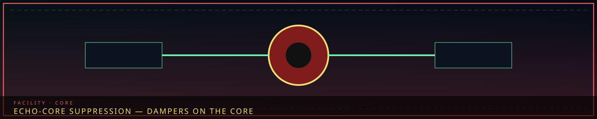

1. Echo-Core Meltdown Phenomenon
When an Echo-Core suffers overwhelming psychological trauma or ideological fracture, their resonance field erupts and their own floor becomes a hostile dream-construct of itself. One Core, one floor, one fracture. It is not Facility Meltdown (all eight) and not an Ordeal Watch. M.A.W. still works. Ordeals can overlap and are a second problem.
Seiyon is not a floor. A dark Secretary station is a Floor 1 failure, not a ninth Core Suppression. Xyan's body is outside before Day 355; suppressing Gate Watch is still suppressing the floor, not a chair.
2. Floor manifestations (the whole Hand)
| Echo-Core | Floor | Manifestation | What actually breaks |
|---|---|---|---|
| Majin | 1 Neutral Command | Nihilistic silence | Orders stop landing. |
| Seiyon | Station on F1 — not a floor | Station dark | The palm goes deaf. Treat as F1 failure, not a ninth suppression. |
| Dekan | 2 Maw's Keep | Hunger of the keep | Cells feel like the Edge. Dekan is not Floor 6. |
| Zyrak | 3 Extraction Hall | Molten Han-flux | Frames run without petitions. Quiet crucibles stop being quiet. |
| Ayshuk | 4 Insight Forge | Aperture that will not close | Looking as a wound. Ledgers lie. |
| Mellda | 5 Border Watch | Wall that cuts its own | Slits become blades. Slits become blades. |
| Marjuk | 6 Deep Vault | Memory labyrinth | You cannot tell whose name you are wearing. Not Dekan. |
| Ishall | 7 Shadow Corps | Unlisted made visible | Blackout fails as light. Routes print themselves. |
| Xyan | 8 Gate Watch | Gate answers or goes mute | Tablets miscount. Warnings become orders or vanish. |
“A red core. Green dampers left and right. No one is inside the circle.”

How suppression works
When an Echo-Core suffers overwhelming psychological trauma or ideological fracture, their resonance field erupts and their own floor becomes a hostile dream-construct of itself. One Core, one floor, one fracture. You work the floor as it has become, not as the roster still prints. Named missions on that floor pause. They are not the suppression. Research does not unlock off a Core fight. When it ends, the floor is still that floor.
A floor's named missions being complete is how the Hand is even in a position to confront that Core. Floor 1 has no named missions; confronting Majin is still confronting the palm, not farming cells. You do not collect a Han quota to "clear" a Core. You do not press Absolvohan because a timer hit zero. M.A.W. still works. Ordeals can overlap and are a second problem with a color and a watch.
Nine Cores, eight floors. Seiyon is the station on Floor 1, not a ninth suppression. Xyan's body is outside before Day 355; suppressing Gate Watch is still suppressing the floor, not a chair. If more than one floor is gone, you are not in Core Suppression anymore. Open Facility Meltdown.
Orders stop landing. Legs still work. Hearing does not.
Majin — nihilistic silence
Floor 1. The gold plate goes quiet in a way that is not peace. Agents still have legs. They stop hearing each other. Assignment unsigned. An alarm that started in a cell never becomes a facility order. The other seven floors will later claim they never heard. That claim is the wound.
You work the palm as silence: get a body to Seiyon's station if the light is still there; if the station is also dark, treat it as the same Floor 1 failure, not a second Core. Recall to the Dais, if already researched, still only pulls free agents. It will not pull someone out of a work that has already started on another floor. When it ends, Majin still signs. The 1,778-reset count is still Cycle lore in the office. It is not a loot phase.
Station dark is Floor 1 failure. There is no ninth Core.
Seiyon is not a floor
The Secretary's station going dark is a Floor 1 failure. It is not a ninth Core Suppression. Seiyon is not posted. Seiyon is not assigned. Nine Echo-Cores, eight floors. If you "suppress Seiyon" you are inventing a spare wrist. Keep the station lit. If it is not lit, you are already in Majin's silence.
Cells feel like the Edge. Do not file ω as a specimen.
Dekan — hunger of the keep
Floor 2. The keep turns against the people who work it. Cells feel like the Edge. Gauges lean toward hunger. The Maw's window is still a window; the dream will try to make it a door. You do not file ω as a specimen you scheduled. You return housed breaches. You do not treat the Holding Yard as a kill floor.
Dekan is not Floor 6. Sending a name-flag to the keep because the handwriting looked similar is how you lose a cylinder and a cell in the same hour. Missions pause. Gauge Overlay, if researched, still shows a number — the number may be lying. When it ends, Dekan still vetoes. The register is still the register. SE-003 still yields nothing.
Frames run without petitions. Quiet crucibles sing.
Zyrak — molten flux
Floor 3. The Hall's own heat turns on unarmored staff. Frames run without petitions. Quiet crucibles stop being quiet. A refused petition is supposed to be an absence you can hear; in the dream it sings. You do not issue Named Vigil as loot. You do not run SE-003. Weapon, suit, gift are still three stations even when the dream wants one loot wheel.
Through the cyan join, Floor 8 may still be counting tablets. The Hall's job is not to answer exile. When it ends, Zyrak still hardens only what Dekan named. Bonding is still a session after a scan.
Looking as a wound. Ledgers lie. Rings, never an eye.
Ayshuk — aperture that will not close
Floor 4. Looking becomes a wound. Ledgers lie. Rings of glass will not stop being rings, and they will not become an eye — if they do, you are already failing the craft. A reading that calcifies into Taboo-shaped law still has to leave for Floor 8. In the dream it wants to stay as a clever note.
Ayshuk cannot feel sorrow. That is why the ledgers can be trusted until the aperture refuses to close. When it ends, Floor 4 still files, or the keep stays blind. Observation Levels do not jump. M.A.W. still does not drop at Level 4.
Slits become blades. Tide wants every color.
Mellda — wall that cuts its own
Floor 5. Slits become blades. The wall cuts the people who hold it. Tide telemetry wants to be every color at once. You do not launch SED from this shaft. You do not send Border teams to Insight because the alarm color looked similar. You log what touched the Hand. You hold the wall.
Mellda does not hold Floor 7's routes. When it ends, the wall is still the wall. Thin yield is still fifty Han. Tide is still not a dive.
Doors remember the wrong person. Cheongula is not a puzzle.
Marjuk — you cannot tell whose name you are wearing
Floor 6. Doors remember the wrong person. Cylinders feel open. Cheongula's seal looks like a puzzle. It is not. A mis-open is a Fracture event even in a dream. Curiosity is still not clearance. Dekan is still not this shaft.
When it ends, names stay names if the vault is staffed. An unstaffed vault is not a public library. Second logs from Lament edges are still due today or they are lost names tomorrow.
Blackout fails as light. A burned house is a person.
Ishall — unlisted made visible
Floor 7. Blackout fails as light. Routes print themselves. Safe houses become addresses. Informants become a menu. They are not. A burned house is a person. Opening Collectors' Row and calling it intel is still a failure with a name.
When it ends, unlisted is still a department. Floor 5 must still have filed a touch before a path is a path. Floor 8 still counts the return. A shaft that "doesn't report" is still a fantasy.
Tablets miscount. Warnings become orders or vanish.
Xyan — the Gate answers
Floor 8. The Gate answers when it should only watch, or goes silent when Xyan is still sending. Tablets miscount. Warnings become orders or vanish. Seven, not ten. Converting the Gate into a disposal protocol is a failure even when the dream wants a gavel.
Before Day 355 the body is outside. Suppressing Gate Watch is not suppressing a chair. After return, the Exile's Station is both receiving desk and command chair, and the floor has to remember the difference. When it ends, returns are still returns. Judexhan is still not on this roster.
Overlap
If more than one floor is gone, open Facility Meltdown. If the color is an Ordeal, open Ordeals. If the wall is the Tide, Floor 5 logs it; SED dives; this page does not. Named missions do not auto-complete when a Core ends. Research does not drop. Absolvohan stays on the Cycle. Daily Recordings stay on the Cycle. This page is one patron, one department, one ideological fracture.